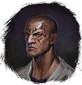

Открыть в интерактивной вики →
| Уровень | 14 |
|---|---|
| Сила (PvE) | 498 |
| Аспект арены | Yantrei |
| Здоровье | 700 |
| Мана | 600 |
| Выносливость | 600 |
Команда


Путь

Тень
Аспект

Yantrei
Статистика

Уровень: 30
") 498
498
Здоровье: 700
Мана: 600
Выносливость: 600
Умения
| Обычная атака | Огненный Дождь Огненный Шар Магическая Искра |
Иммунитеты / особые умения
-
Локация
Разбойничий Лес
Рыбацкая Деревня
Приселок Трентиса
Болото
Рыбацкая Деревня
Приселок Трентиса
Болото
Дроп
| Предметы | Синергетики | Эпики | |||
 | | |